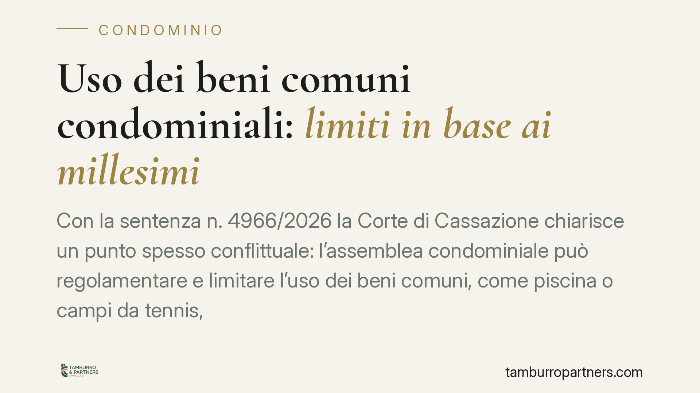

Uso dei beni comuni condominiali: limiti in base ai millesimi
Con la sentenza n. 4966/2026 la Corte di Cassazione chiarisce un punto spesso conflittuale: l'assemblea condominiale può regolamentare e limitare l'uso dei beni comuni, come piscina o campi da tennis, parametrandolo ai millesimi di proprietà. Il principio del pari uso previsto dall'art. 1102 c.c. non impone un godimento identico per tutti i condomini.

Il caso
La pronuncia nasce dal contenzioso tra alcuni condomini e la propria assemblea, che aveva approvato un regolamento d'uso dei servizi comuni — in particolare piscina, campi da tennis e accesso degli ospiti — differenziando il godimento sulla base dei millesimi di proprietà.
I condomini contestavano la delibera, sostenendo che l'art. 1102 del Codice civile garantirebbe a ciascuno un uguale diritto d'uso della cosa comune. La Cassazione ha respinto questa lettura, confermando la legittimità della regolamentazione adottata dall'assemblea.
Inquadramento normativo
L'art. 1102 c.c. stabilisce che ciascun partecipante può servirsi della cosa comune, purché non ne alteri la destinazione e non impedisca agli altri di farne "parimenti uso" secondo il loro diritto. La questione interpretativa riguarda proprio il significato di "pari uso".
La Corte precisa che questa norma non è inderogabile e non si traduce nell'obbligo di un godimento quantitativamente identico per ogni condomino. Il "pari uso" va letto in relazione al diritto di ciascuno, cioè alla quota di proprietà espressa in millesimi. Chi possiede una quota maggiore dispone, in linea di principio, di una più ampia facoltà di godimento.
Il potere regolamentare dell'assemblea trova fondamento negli artt. 1136 e 1138 c.c. L'art. 1138 attribuisce al regolamento la disciplina dell'uso delle cose comuni, mentre l'art. 1136 fissa i quorum per l'approvazione delle delibere. L'assemblea può dunque modulare tempi, modalità e intensità d'uso dei beni comuni, a condizione di rispettare due limiti: non può sopprimere del tutto il diritto di godimento di un condomino, né può introdurre discriminazioni arbitrarie e irragionevoli.
Implicazioni pratiche
Per i condomìni dotati di beni comuni a godimento "turnabile" o limitato — impianti sportivi, piscine, aree ricreative, parcheggi, posti barca — la sentenza offre un criterio operativo chiaro. L'assemblea può legittimamente prevedere che l'accesso o la fruizione di questi beni siano proporzionati alla quota millesimale, oppure regolati tramite turni, prenotazioni o limiti al numero di ospiti.
Resta però fermo un confine preciso. La differenziazione deve essere ragionevole e funzionale alla gestione del bene, non uno strumento per escludere di fatto alcuni condomini. Una delibera che azzerasse il godimento di un partecipante, o che introducesse criteri palesemente sproporzionati, resterebbe impugnabile.
Per il singolo condomino, la decisione sposta il piano del confronto: non è più sufficiente invocare il "pari uso" in astratto per contestare un regolamento. Occorre dimostrare che la limitazione è irragionevole, discriminatoria o lesiva in concreto del proprio diritto.
Per l'amministratore, la pronuncia rafforza la possibilità di proporre regolamenti d'uso strutturati, utili a prevenire conflitti sulla fruizione dei servizi, specie nei complessi residenziali di maggiori dimensioni.
Cosa fare in concreto
- Verificate il regolamento esistente: controllate se i criteri d'uso dei beni comuni sono già disciplinati e se risultano proporzionati e aggiornati rispetto alla sentenza.
- Documentate la ragionevolezza: se l'assemblea intende limitare o modulare l'uso di un bene, verbalizzate le motivazioni gestionali (capienza, sicurezza, costi di manutenzione) a sostegno della scelta.
- Fissate criteri oggettivi: preferite parametri misurabili — millesimi, turni, numero massimo di ospiti — a formule discrezionali che espongono la delibera a impugnazione.
- Rispettate i quorum: assicuratevi che l'approvazione rispetti le maggioranze richieste dall'art. 1136 c.c. in relazione al tipo di delibera.
- Valutate l'impugnazione nei termini: il condomino che ritenga la limitazione lesiva deve attivarsi nei termini di legge per impugnare la delibera, previa analisi della sua concreta ragionevolezza.
Consigliamo, nelle situazioni più complesse, una verifica preventiva del regolamento d'uso prima della sua approvazione, così da ridurre il rischio di contenzioso successivo.
Disclaimer
Contributo informativo a cura di Tamburro & Partners - Avv. Giuseppe Tamburro. Non costituisce parere legale.
Ogni condominio ha una storia a sé.
Se gestisci un'amministrazione e vuoi un confronto su una specifica questione condominiale, scrivi allo studio. Ti rispondiamo entro un giorno lavorativo.